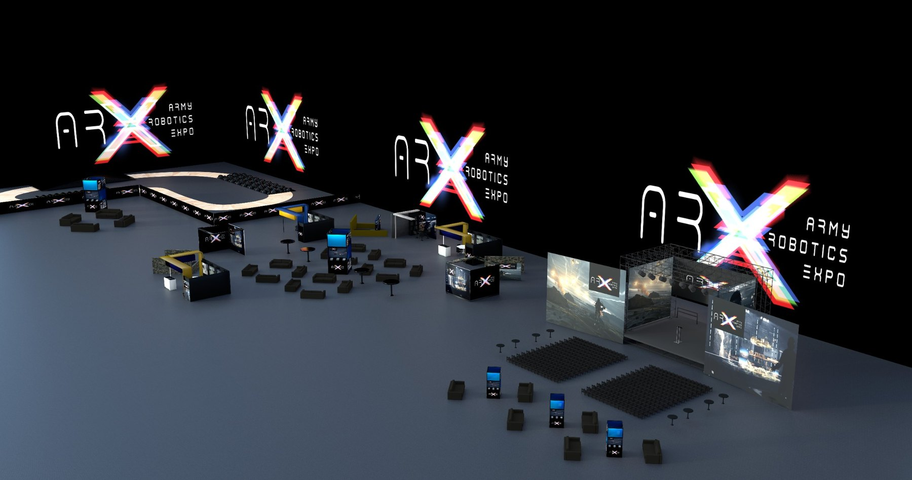

Film props and set pieces
Oversized props, scenic forms, set elements, textured objects and paint-ready forms for art departments and production teams.

Large-format robotic fabrication from Canberra for film props, scenic builds, sculptural installations, prototypes, oversized signage features and custom display work across Australia.
Canberra capability
MM Design can take a digital model or rough design direction through toolpath planning, robotic foam milling, hard coating, polymer spray finishing, sanding and paint-ready preparation.
This is suited to jobs where hand-building would be slow, inconsistent or too difficult to scale, including film set elements, large props, sculptures, display pieces, product models and prototype forms.
Best suited for
Oversized props, scenic forms, set elements, textured objects and paint-ready forms for art departments and production teams.
Large shapes, installation features, public-facing objects and dimensional forms that need a clean repeatable process.
Scaled or oversized models, proof-of-concept forms, display prototypes and physical mock-ups.
Dimensional signage elements, brand objects, display pieces and custom shapes for commercial or event environments.
Foam patterns, master forms and shapes that can support moulding, coating or further fabrication stages.
Hard-coated and prepared surfaces ready for scenic paint, finishing, install or further production work.
Materials and process
Large-format foam cutting and milling from supplied CAD, developed models or approved design direction.
Robotic toolpaths for repeatable sculptural, scenic and prototype forms that need size and consistency.
Foam forms prepared with protective coating for handling, finishing, transport and practical use.
Spray-applied finishing systems for tougher surfaces and cleaner paint-ready preparation.
Filling, sanding, surface preparation and coordination with paint or scenic finishing requirements.
Planning around handling, joining, transport, site access, installation and how the final object will be used.
What to send us
You do not need a perfect file to start. A rough sketch, reference image, dimensions and a deadline is usually enough to begin the conversation.
Overall dimensions, whether it is full-size, scaled, oversized or modular.
Indoor, outdoor, on-set, display, touchable, paint-ready or final finished surface.
CAD, STL, OBJ, drawings, sketches, photos or visual references.
When it is needed, where it is going and whether install or transport support is required.
Why MMD
The benefit is not just access to a robot. The value is having the design thinking, workshop judgement, coating knowledge and install planning in the same place.
That means the object is planned around how it will be made, handled, finished and used, instead of being treated as a file-only machining job.

Start a robotic fabrication job
Useful details include size, finish, deadline, whether it needs to be handled on set, and whether it is for indoor, outdoor, display or filming use.